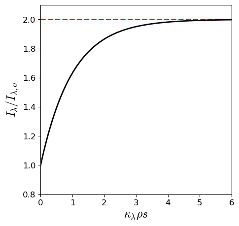

Astronomers receive light only from the outermost layer of the star’s atmosphere that overly an opaque interior. The temperature, density, and composition of this layer determine the features of the star’s spectrum, where we must describe how light travels through the gas to interpret the observed spectral lines properly.
Recall the Planck function was based upon the wavelength-dependent flux of blackbody radiation \(B_\lambda(T)\) from an element of surface area \(dA\). A similar procedure can be used to define the intensity of a cone of light. The light is measured in spherical coordinates by the angle \(\theta\), which is the direction perpendicular to the surface \(dA\) so that \(dA\cos\theta\) is an area projected onto a plane perpendicular to the propagation direction of the light. The light energy is wavelength dependent (\(E = hc/\lambda\)) and thus can be defined as
where \(E_\lambda d\lambda\) is the energy carried by the rays in the light cone in a time interval \(dt\). The specific intensity of the rays is defined as
Fig. 5.1 Schematic for the intensity \(I_\lambda\) that passes through a surface. Image credit: Carroll & Ostlie (2007).#
Note
There is a \(d\lambda\) factor in the numerator and denominator, which is a placeholder for the alternate definition of specific intensity in terms of frequency \(I_\nu\). Recall from the Planck function using \(d\nu = -\frac{c}{\lambda^2}d\lambda\) as a conversion factor.
The specific intensity is usually referred to simply as the intensity and in spherical coordinates,
with the substitution for the solid angle \(d\Omega = \sin\theta d\theta \:d\phi\). The Planck function \(B_\lambda\) is an example of the specific intensity for the special case of blackbody radiation. In general, the light energy is not required to vary with wavelength (e.g., monochromatic sources or lasers).
The energy of a single light ray does not spread out (or diverge), however the specific intensity \(I_\lambda\) is typically used to describe a bundle of light rays and thus varies with direction. The mean intensity of the radiation is determined by integrating over all directions and normalizing the result by \(4\pi\:{\rm sr}\) (i.e., the solid angle enclosed by a sphere) to obtain \(\langle I_\lambda \rangle\), the average value of \(I_\lambda\). In spherical coordinates, this average value is
For an isotropic radiation field (i.e., one with the same intensity in all directions), the mean intensity is the intensity and since blackbody radiation is isotropic, then \(\langle I_\lambda \rangle = B_\lambda\).
Consider a small cylinder (open at both ends) with perfectly reflecting walls inside, where light enters the base of the cylinder and bounces until it exits through the top of the cylinder. The radiation that enters the cylinder at an angle \(\theta\) travels through the cylinder in a time \(dt = dL/(c\cos\theta)\) and the energy inside (within a wavelength range \(\lambda\) and \(\lambda + d\lambda\)) is
using Eqn. (5.2) and the substitution of \(dt\). The quantity \(dA dL\) is the volume of the cylinder, where the specific energy density (\(u_\lambda d\lambda\)) is found by normalizing the energy \(E_\lambda d\lambda\) by the volume of the cylinder, integrating over all the solid angles, and using Eqn. (5.3):
Astronomers are often interested in the net energy that passes through a unit area in the direction of the z-axis. This is given by the specific radiative flux\(F_\lambda\) as
The specific radiative flux considers only the z-component (i.e., \(\cos\theta\)) of a light ray, where oppositely directed rays cancel. Both the radiative flux and the specific intensity (Eqn. (5.2)) describe the light received from a celestial source. When a source is resolved by the telescope as defined by Rayleigh’s criterion (\(\theta > \theta_{\rm min}\)), the specific intensity is measured. For example, the measured value of the specific intensity (at 501 nm) at the center of the Sun’s disk is \(I_{501} = 4.03 \times 10^{13}\;{\rm W/m^{3}/sr}\).
Fig. 5.3 The measurement of (a) the specific intensity for a resolved source and (b) the radiative flux for an unresolved source. Image credit: Carroll & Ostlie (2007).#
For an unresolved source, the radiative flux is measured because the energy received from the entire source will disperse through the diffraction pattern (i.e., Airy disk and rings). Because the light arriving at the detector leaves the source at all angles, the detector is effectively integrating the specific intensity over all directions. As the distance to the source increases, the amount of energy falling within the Airy disk decreases as \(1/r^2\), as expected.
Einstein’s special theory of relativity describes photons as massless particles that nonetheless carry a momentum \(p\) that is related to its energy \(E\). Thus, the photon can exert a radiation pressure. Consider the gas pressure exerted by molecules bouncing off a wall, where the radiation pressure of photons can be described through a similar process. At a given time, a photon can strike a perfectly reflecting surface of area \(dA\) and be reflected into a solid angle \({\rm d}\Omega\) (at the same angles \(\theta\) and \({\rm d}\Omega\) due to the law of reflection). The change in \(p_z\) of photons within a range of wavelengths from the reflection is
using \(E_\lambda\) from Eqn. (5.2). Recall that \(F = dp/dt\) and \(P = F/A\) so that the radiation pressure \(P_{\rm rad,\lambda}d\lambda\) can be written as
Fig. 5.4 Radiation pressure produced by a (a) single photon and (b) stream of photons from the solid angle \(d\Omega\).#
Instead of a reflecting wall, replace it with a mathematical surface \(dA\) where the incident photons will now keep on going through and be streaming from the other side. For an isotropic radiation field, the leading factor of 2 is removed because there is no longer a change in momentum upon reflection. The radiation pressure becomes
where the volume over all solid angles is simply a unit sphere (\(4\pi/3\)). However, for a non-isotropic radiation field the equation for the radiation pressure is still valid, but the pressure depends on the orientation of the mathematical surface \(dA\).
In general, the total radiation pressure at all wavelengths is found by
The classification of stellar spectra is complicated by the fact that stars are not actually blackbodies. The temperature of a star’s photosphere can be estimated by the Stefan-Boltzmann law and the spectrum shape using the Planck function. However, the Sun’s spectrum deviates substantially from the idealized shape because solar absorption lines remove light at certain wavelengths. A dense series of metallic absorption lines in the Solar spectrum is especially effective and called line blanketing.
5.2.1. Temperature and Local Thermodynamic Equilibrium#
There are many different measures of temperature within a star, which are defined according to a particular physical process.
The temperature obtained from the Stefan-Boltzmann law (effective temperature) is uniquely defined for a particular layer of the stellar atmosphere.
The excitation temperature is defined by the Boltzmann equation, which measures the ratio of atoms between two quantum states.
The ionization temperature is defined by the Saha equation, which measures the ratio of atoms that are ionized (missing electrons).
The kinetic temperature is contained in the Maxwell-Boltzmann distribution, which describes the velocity distribution of gas particles.
The color temperature is obtained by fitting the Planck function to the shape of a star’s continuous spectrum.
Fig. 5.5 The spectrum of the Sun sampled in 1 nm (\(\lambda < 630\ {\rm nm}\)) and 2 nm (\(\lambda > 630\ {\rm nm}\)) wavelength intervals. The dashed curve represents an ideal blackbody with the Sun’s effective temperature. Spectrum data taken from 2000 ASTM Standard Extraterrestrial Spectrum Reference E-490-00. See Table 2.2 for expected absorption lines.#
Show code cell contentHide code cell content
frommatplotlibimportrcParamsimportnumpyasnpimportmatplotlib.pyplotaspltimportmatplotlib.tickerastickerfromscipy.constantsimporth,c,kimportwarningswarnings.filterwarnings("ignore")rcParams.update({'font.size':12})rcParams.update({'mathtext.fontset':'cm'})defBlackbody(lam,T,wave=False):# Calculate brightness from Planck's radiation law#nu = frequency in Hz# T = effective temperature in Kifwave:B=(2*h*c**2/lam**5)/(np.exp(h*c/(lam*k*T))-1)else:nu=c/lamB=(2*h*nu**3/c**2)/(np.exp(h*nu/(k*T))-1)returnB# Data taken from American Society for Testing and Materials (ASTM) developed an air mass zero reference spectrum (ASTM E-490) for use by the aerospace community.# https://www.nrel.gov/grid/solar-resource/spectra-astm-e490.htmldata_fn="https://raw.githubusercontent.com/saturnaxis/Astrobio/main/Chapter_03/solar_spectrum.csv"solar_irr=np.genfromtxt(data_fn,delimiter=',',comments='#')solar_irr[:,0]*=1000cut_window=np.where(np.logical_and(solar_irr[:,0]>340,solar_irr[:,0]<1000))[0]solar_irr[:,1]/=1000solar_irr=solar_irr[cut_window]T_sun=5800Omg=6.794e-5# average solid angle of the Sun in srfs='x-large'fig=plt.figure(figsize=(8,4),dpi=150)ax1=fig.add_subplot(111)ax1.plot(solar_irr[:,0],2.9*solar_irr[:,1],'k-',lw=1.5)# convert from m-->nm and multiply by solid angle of the solar diskB_lam=Blackbody(solar_irr[:,0]*1e-9,T_sun,True)*1e-9*Omgax1.plot(solar_irr[:,0],2.9*B_lam,'r--',lw=1.5)ax1.text(400,0.15,"$\\rm Ca\ II$",rotation=90,horizontalalignment='center',verticalalignment='bottom',fontsize=10)ax1.text(394,1.25,"$\\rm K$",rotation=90,horizontalalignment='center',verticalalignment='bottom',fontsize=10)ax1.text(402,2.,"$\\rm H$",rotation=90,horizontalalignment='center',verticalalignment='bottom',fontsize=10)ax1.text(592,3.25,"$\\rm Na\ I\ D$",rotation=90,horizontalalignment='center',verticalalignment='bottom',fontsize=10)ax1.text(658,3.25,"$\\rm H\\alpha$",rotation=90,horizontalalignment='center',verticalalignment='bottom',fontsize=10)ax1.text(488,4,"$\\rm H\\beta$",rotation=90,horizontalalignment='center',verticalalignment='bottom',fontsize=10)ax1.text(440,3.8,"$\\rm H\\gamma$",rotation=90,horizontalalignment='center',verticalalignment='bottom',fontsize=10)ax1.text(412,3.8,"$\\rm H\\delta$",rotation=90,horizontalalignment='center',verticalalignment='bottom',fontsize=10)ax1.set_xlim(340,1000)ax1.set_ylim(0,7)ax1.set_ylabel("Energy ($\\rm 10^4\ W/m^2/sr$)",fontsize=fs)ax1.set_xlabel("Wavelength $\lambda$ (nm)",fontsize=fs)ax1.minorticks_on()ax1.tick_params(which='major',axis='both',direction='out',length=6.0,width=3.0)ax1.tick_params(which='minor',axis='both',direction='out',length=3.0,width=2.0)fig.savefig("Fig05.png",bbox_inches='tight',dpi=150)
The effective temperature is the only measure that depends strictly on the location within the star, while the remaining temperatures vary according to the conditions of the gas that can be described by the simple case of a gas confined within an “ideal” box (i.e., ideal gas law). Due to the boundary condition of the box, the energy of the gas particles and blackbody radiation will come into equilibrium and can be described by a single well-defined temperature. As a result, there is no net flow of energy through the box, or between the matter and radiation. The number of photons absorbed per unit time is equal to the number of photons emitted, which is called thermodynamic equilibrium.
Such a case cannot be true everywhere in a star (i.e., stars shine so some photons escape) and a star cannot be in perfect thermodynamic equilibrium. A net outward flow of energy occurs through the star and the temperature varies with the stellar radius. The ideal box approximation can be used:
if the distance over which the temperature changes significantly is large compared with the distances traveled by the particles and photons between collisions (i.e., the ideal box is small enough).
The distances traveled by particles are called their mean free paths. When the above condition is met, the particles and photons cannot escape the local environment and the temperature of the box is nearly constant (i.e., local thermodynamic equilibriumLTE).
The photosphere is the surface layer of the Sun’s atmosphere where the photons can escape into space. The temperature in one region varies from 5580 K to 5790 K over a distance of 25.0 km. The temperature scale height\(H_T\) is the characteristic distance over which the temperature varies: \(H_T \equiv T_{\rm avg}/|dT/dr|\).
Exercise 5.1
What is the temperature scale height \(H_T\) of the Sun’s photosphere?
The temperature scale height is determined by approximating the temperature gradient \(|dT/dr|\). Across the photosphere, the temperature varies from \(5580\ {\rm K}\) (top) to \(5790\ {\rm K}\) (bottom) of a \(25\ {\rm km}\) thick shell of the solar photosphere. The average temperture \(T_{\rm avg}\) is \(5685\ {\rm K}\), which can be determined using an arithmetic mean. The temperature scale height is given as
importnumpyasnpdefscale_height(T1,T2,r):#T1 = low temperature#T2 = high temperature#r = distance traveledT_avg=np.mean([T1,T2])#average temperaturedT=np.abs(np.diff([T1,T2]))#temperature range dTreturnT_avg/(dT/r)T1_Sun=5580#KT2_Sun=5790#K r_Sun=25.0#kmH_T=scale_height(T1_Sun,T2_Sun,r_Sun)print("The scale height of the Sun's photosphere is %3d km."%np.round(H_T,0))
The scale height of the Sun's photosphere is 677 km.
Is the Sun’s photosphere in LTE? To answer this question, we need to find the mean free path of the particles and photons. The density of the Sun’s photosphere is about \(\rho = 2.1 \times 10^{-4}\:{\rm kg/m^3}\) and consists primarily of neutral hydrogen atoms in the ground state (see the previous chapter). The number density of hydrogen atoms (i.e., number of H atoms per cubic meter) is roughly
with the mass of hydrogen \(m_H = 1.67 \times 10^{-27}\:{\rm kg}\). The collision probability for two atoms is higher if their centers pass within twice the atomic radius (i.e., Bohr radius) or \(2a_o\), where \(a_o \approx 5.29 \times 10^{-11}\:{\rm m}\). This region of higher collision probability defines an area or cross section\(\sigma \equiv \pi(2a_o)^2\).
Fig. 5.6 A hydrogen atom with a cross sectional radius (\(r=2a_o\)) moving with a speed \(v\) over a time \(t\). The atom scoops out a cylindrical volume \(V\) as it encounters \(N\) atoms along its path \(x\).#
Consider a single atom of radius \(2a_o\) with a cross section of \(4\pi a_o^2\) moving with a speed \(v\) over a time \(t\). The atom has moved a distance \(vt\) and sweeps out a cylindrical volume \(V=\sigma vt\). Within the volume, there are \(N = n\sigma vt\) point atoms that collide with the moving atom. The mean free path\(\ell\) between collisions is
What is the mean free path for the Sun’s photosphere consisting of hydrogen atoms?
The mean free path \(\ell\) depends on the number density of hydrogen atoms \((n_H = 1.27 \times 10^{23}\:{\rm m^{-3}})\) in the solar photosphere. Additionally, it depends on the collisional cross section \((\sigma_H = 4\pi a_o^2)\). Using these quantities, we find
defmean_free_path(n,sigma):#n = number density of atoms#sigma = cross sectionreturn1./(n*sigma)n_H=2.1e-4/1.67e-27#number density of H atoms in Sun's photospherea_o=5.29e-11#m; radius of the Bohr atomsigma_H=np.pi*(2*a_o)**2ell_H=mean_free_path(n_H,sigma_H)print("The mean free path between collisions in the Sun's photosphere is %1.2e m."%np.round(ell_H,6))
The mean free path between collisions in the Sun's photosphere is 2.26e-04 m.
The temperature scale height in the Sun’s photosphere is 677 km and the mean free path for collisions is \(2.26 \times 10^{-4}\) m, where \(H_T/\ell \approx 3 \times 10^9\). The criteria for LTE is satisfied for the hydrogen atoms of the photosphere (not the photons) and the gas particles see an essentially constant kinetic temperature between collisions. In addition, they are effectively confined within a limited volume.
Any process that removes photons from a beam of light is collectively termed absorption, which includes the scattering of photons (i.e., Compton scattering), the absorption of photons by atomic electrons making upward transitions, and molecular energy-level transitions. The change in intensity \(dI_\lambda\) of a photon as it travels through a gas is proportional to its intensity \(I_\lambda\), the distance traveled \(ds\), and the density of the gas \(\rho\) through the relation,
The quantity \(\kappa_\lambda\) is called the wavelength-dependent absorption coefficient (or opacity). The intensity decreases (due to the minus sign) along the path \(s\) traveled by the photon. The opacity has units of area/mass (\({\rm m^2/kg}\)) because it is cross section of stellar gas that is removing the photons from the beam of light. In general, the opacity of a gas is a function of its composition, density, and temperature.
Consider a monochromatic beam of light with initial intensity \(I_o\) and wavelength \(\lambda\) that travels a distance \(s\). The final intensity \(I_f\) can be found by integrating both sides of Eqn. (5.11) by
which shows that the intensity exponentially decays as the light travels a distance \(s\) into the medium described by the absorption coefficient \(\kappa\) and density \(\rho\). There is a characteristic length \(\ell = (\kappa \rho)^{-1}\) by which the intensity declines.
Exercise 5.3
What is the characteristic length \(\ell\) for a photon near the peak wavelength (500 nm) in the Solar photosphere? (Use \(\kappa_{500} = 0.03\;{\rm m^2/kg}\). )
The characteristic length \(\ell\) describes how far a photon travels as its intensity declines. The rate of intensity decline in the solar photosphere depends on the absorption coefficient \(\kappa\) and the density of the photosphere. The Sun peaks at \({\sim}500\ {\rm nm}\) and thus, we use the absorption coefficient \(\kappa_{500}\). The characteristic lengthis given as
The temperature scale height is 677 km, where for photons \(H_T/\ell \approx 4.2\) and the criteria for local thermodynamic equilibrium is not satisfied. The photospheric photons do not see a constant temperature and LTE is not strictly valid in the photosphere. Although LTE is a commonly invoked assumption in stellar atmospheres, it must be used with caution.
defopacity_length(kappa,rho):#kappa = absorption coefficient at a given wavelength; m^2/kg#rho = density of the gas; kg/m^3return1./(kappa*rho)kappa_500=0.03rho_photo_Sun=2.1e-4ell_500=opacity_length(kappa_500,rho_photo_Sun)/1000#convert to kmprint("The characteristic distance traveled by a photon in the Solar photosphere is %3d km."%np.round(ell_500,-1))
The characteristic distance traveled by a photon in the Solar photosphere is 160 km.
Scatter photons have a mean free path (given by Eqn. (5.10)), where \(\kappa_\lambda \rho\) and \(n\sigma_\lambda\) can be though of as the fraction of photons scatter per meter of distance traveled. Note that the mean free path is dependent on the photon wavelength \(\lambda\). However it is convenient to define an optical depth\(\tau_\lambda\) as
where \(s\) is the distance measured along the photon’s direction of motion (i.e., looking back along the path traveled by the photon). The difference in optical depth \(\Delta \tau_\lambda\) can be determined as the difference between the final (\(\tau_{\lambda,f}\)) and initial (\(\tau_{\lambda,o}\)) optical depths, or the integral along the photon’s path as
As the light approaches the observer, it travels from a deeper layer (greater \(\tau_\lambda\)) to shallow layer (lesser \(\tau_\lambda\)) and \(\Delta \tau_\lambda < 0\). The outermost layers of a star have \(\tau_\lambda = 0\) for all wavelengths since the light is leaving the star’s atmosphere. In this case, Eqn. (5.14) becomes
Fig. 5.7 Optical depth \(\tau_\lambda\) measured along a ray’s path starting from outside the material. Image credit: Carroll & Ostlie (2007).#
The optical depth can be related to the intensity by combining Eqn. (5.12) with Eqn. (5.15), where there is a decline in the intensity given by
\[ I_\lambda = I_{\lambda,o} e^{-\tau_\lambda}.\]
If the initial optical depth is equal to unity (\(\tau_{\lambda,o} = 1\)), then the intensity will decline by a factor of \(1/e\) before escaping into the vacuum of space.
Note
The optical depth can be described as the number of mean free paths the photon travels starting from the original position to the surface.
The maximum optical depth is typically \(\tau_\lambda \approx 1\), where deeper layers are completely obscured. In some situations, setting \(\tau_\lambda = 0\) occurs inside the star instead of at the surface.
If \(\tau_\lambda \gg 1\), then the gas is optically thick.
If \(\tau_\lambda \ll 1\), then the gas is optically thin.
The optical depth varies with wavelength, where a gas could be optically thick for a specific wavelength but optically thin for a different wavelength. For example, the Earth’s atmosphere is optically thick for X-rays, but optically thin for visible light.
Fig. 5.8 (a) A light ray entering Earth’s atmosphere at an angle \(\theta\) (b) Example of the determination of \(I_{\lambda,o}\) from a fit of \(I_\lambda\) vs. \(\sec \theta\). Image credit: Carroll & Ostlie (2007).#
How can the opacity of the Earth’s atmosphere be corrected for?
The intensity of the light before entering the atmosphere is \(I_{\lambda,o}\) and \(I_\lambda\) once it reaches the telescope. The optical depth is measured backwards along the path traveled by the light and thus, \(\tau_\lambda = 0\) at the telescope. The distance traveled is the height \(h\) of the atmosphere. The light enters the atmosphere at some angle \(\theta\), where \(ds = -dz/\cos \theta = -\sec \theta dz\). Using Eqn. (5.15) we get
For a single observation, both \(I_{\lambda,o}\) and \(\tau_{\lambda,o}\) are unknown. Over a night of observation, the Earth rotates on its axis and several measurements of the received intensity \(I_\lambda\) as a function of \(\sec \theta\) can be made. Then the best-fitting slope is \(-\tau_{\lambda,o}\) and \(I_{\lambda,o}\) can be determined through extrapolation
The opacity of a material depends on the chemical composition and how photons interact with the particles (atoms, ions, and free electrons) within the material. If a photon passes within \(\sigma_\lambda\) (i.e., the particles’s cross-sectional area) of the particle, then the phone can be either: scattered or absorbed.
In an absorption process, the photon ceases to exist and its energy is incorporated into the thermal energy of the gas.
In a scattering process, the photon just continues along in a different direction.
Both absorption and scattering can remove photons (of a specific wavelength) like a sieve and contribute to the opacity \(\kappa_\lambda\) of the stellar material. If the opacity varies slowly with wavelength, it contributes to the star’s continuous spectrum (or continuum) and dark absorption lines are the result of a rapid variation in the opacity.
There are four primary sources of opacity available for removing photons from our observations of a star. These sources involve the quantum state of an electron, where the terms bound and free are used to describe the initial and final states of the electron within an atom.
Bound-bound transitions are electron transitions from one orbital to another (i.e., excitation and de-excitation). The bound-bound opacity \(\kappa_{\lambda,bb}\) accounts for electrons that remove photons through absorption and the re-emission of the photons are scattered into a different direction than the line-of-sight. This opacity is small except at wavelengths capable of absorption and hence is responsible for absorption lines in stellar spectra.
The de-excitation may also come from collisions with neighboring particles. An important by-product is the degrading of the average energy of the photons. For example, if two photons are emitted (from a cascade process) for every photon absorbed, then the average energy is cut in half. There is not simple equation for bound-bound transitions.
Bound-free absorption, or photoionization, occurs when an incoming photon has enough energy to free, or ionize, an atom. The free electron can have any energy when removed from the atom, but the incoming photon must have a wavelength \(\lambda \leq hc/\chi_n\), where \(\chi_n\) is the ionization energy of the \(n{\rm th}\) orbital. The bound-free opacity \(\kappa_{\lambda,bf}\) contributes to the continuum opacity.
The photoionization cross section for the hydrogen atom is
which depends on the quantum state \(n\) and the wavelength \(\lambda\). The inverse process of free-bound emission occurs during atomic recombination (free electron recombines with an ion, emitting a photon). Similar to bound-bound emission, this also reduces the average energy of the photons.
Free-free absorption is a scattering process that occurs when the speed of a free electron increases (or decreases) after a nearby ion absorbs (or emits) a photon, respectively. This process occurs due to conservation of both energy and momentum. The free-free opacity \(\kappa_{\lambda,ff}\) contributes to the continuum opacity. The process of free-free emission is also known as bremsstrahlung, when means “braking radiation” in German.
Fig. 5.9 Free-free absorption when an free electron is scattered in the vicinity of an ion due to a photon. Image credit: Carroll & Ostlie (2007).#
Electron scattering is as you would expect where a photon is scatter (not absorbed) by a free electron through the process of Thomson scattering. The electron “oscillates” (like a buoy) in the wake of a photon. Because the electron’s cross section is tiny, it is a poor target for an incident photon. The cross section for Thomson scattering \(\sigma_T\) has the same value (independent of wavelength),
This is ~2 billion times smaller than the hydrogen cross section for photoionization from bound-free absorption, \(\sigma_{bf}\). Electron scattering is most effective when the electron density is very high (i.e., high temperatures for ionization) and other sources of opacity are eliminated due to the absence of necessary bound electrons. For high temperatures, the electron scattering opacity \(\kappa_{es}\) dominates the continuum opacity.
A photon can also be scattered by loosely bound electrons. Compton scattering occurs when the photon’s wavelength is much smaller than the atom or Rayleigh scattering if the wavelength is much larger. Compton scatter is usually lumped together with Thomson scattering due to the small change in wavelength of the scattered photon. The cross section for Rayleigh scattering is smaller than the Thomson cross section and can be neglected in most stellar atmospheres. However, it is important in the UV for supergiant stars with their extended envelopes and in cool main-sequence stars.
The opacity of stellar material suddenly increases at wavelengths \(\lambda \leq 364.7\:{\rm nm}\) and the measured radiative flux of the star suddenly decreases. This abrupt drop in the continuous spectrum is the Balmer jump and is evident in the Sun’s spectrum. The size of the Balmer jump in hot stars depends on the fraction of hydrogen atoms in the first excited state. The Balmer jump appears in the middle of the U band in the UBV system, which results in a decrease in the amount of light received in the bandwidth of the U filter and increase the measured values for both the U magnitude and color index (\(U-B\)).
\(H^-\) ion photoionization occurs in the atmospheres of stars later than F0 and is the primary source of continuum opacity, \(\kappa_{H^-}\). An \(H^-\) ion is a hydrogen atom with a second electron, where there is partial shielding provided by the nucleus (to prevent repulsion) and thus the second electron can be loosely bound on the opposite side of the atom. The binding energy (0.754 eV) is small compared with the binding energy of the hydrogen atom from the ground state. The electron is easily liberated by photons with energy greater than 0.754 eV, where the excess energy is converted to kinetic energy. On the other hand, a hydrogen atom can also capture a second electron and release a photon (proportional to the excess kinetic energy of the captured electron) in the process (i.e., \(H+e^- \rightleftharpoons H^- + \gamma\)). A photon with an energy equal to 0.754 eV corresponds to a wavelength of 1640 nm. At longer wavelengths \(H^-\) contributes to opacity through free-free absorption (i.e., more free electrons become available through photoionization).
Note
Rayleigh scattering is important in planetary atmospheres and is responsible for Earth’s blue sky.
Exercise 5.4
What is the maximum wavelength photon that can ionize a hydrogen atom in the first excited state?
The maximum wavelength \((\lambda_{\rm max})\) photon produced through ionization is determined by the ionization energy \(\chi_n = 13.6\ {\rm eV}/n^2\). The first excited state for the hydrogen atom has \(n=2\). The maximum wavelength photon is
defbound_free_H(n):#n = the energy state of hydrogen (1 = ground, 2 = first excited, etc.)chi_n=13.6/n**2#eV; ionization energyreturnhc_eV/chi_n#return max wavelength in nmhc_eV=1239.84198#eV*nm; https://en.wikipedia.org/wiki/Planck_constantprint("The maximum wavelength photon that can ionize a H atom (first excited state) is %3.1f nm."%np.round(bound_free_H(2),1))
The maximum wavelength photon that can ionize a H atom (first excited state) is 364.7 nm.
The opacity in Eqn. (5.15) depends on the wavelength of light, where a star is expected to produce photons covering a wide range of wavelengths. It is often useful to define an opacity that has been averaged over all wavelengths. This averaging produces an opacity that depends only on the composition, density, and temperature of the stellar atmosphere. The most commonly used scheme to compute a wavelength-independent opacity is the Rosseland mean opacity or the Rosseland mean. The Rosseland mean incorporates a weighting function that depends on how fast the blackbody spectrum varies with temperature, which is defined as
The absorption coefficient \(\kappa_\lambda\) varies with wavelength, but it also depends on the assumed source of opacity (e.g., bound-free, free-free, etc.) and there is not a simple equation to describe the average absorption coefficient for bound-bound transitions. Approximation formulae have been developed for the average bound-free and free-free opacities:
which depends on the density \(\rho\), temperature \(T\), the hydrogen mass fraction\(X\), helium mass fraction \(Y\), and the fractional abundance (by mass) of metals \(Z\).
Note
Because most stellar gases are primarily composed of hydrogen and helium, all other constituents are lumped together and referred to as metals. However, certain applications require more specific detail in the composition, where each species is represented by its own mass fraction.
The mass fractions are formally defined as
(5.21)#\[\begin{align} X \equiv \frac{\rm total\: mass\:of\:hydrogen}{\rm total\: mass\:of\:gas} \end{align}\]
(5.22)#\[\begin{align} Y \equiv \frac{\rm total\: mass\:of\:helium}{\rm total\: mass\:of\:gas} \end{align}\]
(5.23)#\[\begin{align} Z \equiv \frac{\rm total\: mass\:of\:metals}{\rm total\: mass\:of\:gas} \end{align}\]
such that \(X+Y+Z = 1\). The Gaunt factors (\(g_{bf}\) and \(g_{ff}\)) in Eqns. (5.19) and (5.20) are quantum-mechanical correction terms. These Gaunt factors are approximately 1 for the visible and UV wavelengths of interest. The guillotine factor\(t\) (Eddington 1932) describes a cutoff to the opacity of an atom after it has been ionized, where typical values lie between 1 and 100.
Equations (5.19) and (5.20) have the functional form \(\bar{\kappa} \propto \kappa_o \rho/T^{3.5}\), where \(\kappa_o\) combines all the factors that depend on composition. H. A. Kramers derived the first forms (in 1923) using classical physics and the Rosseland mean. As a result, any opacity having a temperature and density dependence is referred to as Kramers opacity law.
The electron scattering cross section is independent of wavelength and the Rosseland mean is simply
The mean opacity is modified in cooler stars (later than F0) by the \(H^-\) ion over specific temperature range (3000 K \(\leq T \leq\) 6000 K), density range (\(10^{-7}\leq \rho \leq 10^{-2}\: {\rm kg/m^3}\)), and metal mass fraction (\(0.001 < Z < 0.03\)), when the hydrogen mass fraction \(X\sim0.7\) is lower. The average opacity is
Fig. 5.10 Rosseland mean opacity for a star with \(X=0.7\), \(Y=0.28\), and \(Z=0.02\). The curves are labeled by the logarithmic value of the density. Image credit: Carroll & Ostlie (2007); data taken from Iglesias & Rogers (1996).#
From detailed computer calculations of the Rosseland mean using quantum physics, we find that the opacity increases linearly with density for a given temperature. At a contour of constant density, the opacity rises with increasing temperature that reflects the greater number of free electrons produce by ionization of hydrogen and helium. The hydrogen partial ionization zone and neutral helium ionization occur at about the same temperature (10,000 K). The decline in opacity (after \(\log_{10} T = 4\) or 10,000 K) roughly follows a Kramers law (\(\bar{\kappa} \propto T^{-3.5}\)) and is primarily due to the bound-free and free-free absorption.
The He II ion becomes fully ionized at 40,000 K for a wide range of stellar parameters, where there is a slight increase in the number of free electrons available. Ionization of certain metals (most notably iron) occurs above \(10^5\) K, which produces another increase in the average opacity. Electron scattering dominates at the highest temperatures when nearly all the stellar material is ionized (i.e., few electrons available for bound-bound or bound-free processes).
This section describes stellar atmospheres that are in equilibrium or a steady-state. This means that the mechanisms involved in absorbing and emitting energy must be in balance throughout the star so that no change in total energy occurs within any layer of the interior. There are stars where this is not the case (e.g., pulsating stars) and such stars periodically absorb or “dam up” the outward flow of energy to drive stellar oscillations.
Emission is defined as any process that adds photons to a beam of light, which includes the scattering of photons into the beam and the true emission of photons through electron transitions. Opacity described processes (bound-bound and free-bound) that absorb photons, where there is an inverse process through emission (e.g., bound-bound emission, etc.). The processes of absorption and emission hinder the flow of photons through a star and there is not a direct flow of photons streaming towards the surface. Instead, individual photons travel only temporarily within the beam as they are repeatedly scattered in random directions (i.e., going on side-quests) while on their journey.
As the photons move through the stellar material, they follow a random walk (i.e., a haphazard path). Between each atomic encounter, the photon travels a path \({\bf \ell}\) (the mean free path), which can be summed over a large number \(N\) directed steps to produce a net vector displacement d:
Fig. 5.11 Displacement d (black arrow) composed of paths \(\ell_i\) for a random walking photon. The photon begins the random walk on the black star and terminates on the white dot.#
Using the magnitude definition of a vector dot product (\(A\cdot B = |A||B|\cos\theta\)) and each vector has the same length (\(|{\bf \ell_i}|^2 = |{\bf \ell_j}|^2 = \ell^2\)), then we have \(N\) diagonal terms (\(i=j\)) and \(N(N-1)\) off-diagonal (\(i\neq j\)) terms. Along the diagonal, \(\cos\theta_{ii} = \cos\theta_{jj} = 1\), so that we find
For a large number of randomly directed steps, the sum of all the cosine terms approaches zero. For a random walk, the displacement \(d\) scales with the size of each step \(\ell\) by
Through a random walk, the transport of energy through a star by radiation alone can be extremely inefficient. It takes 100 steps for a photon to travel a distance of \(10\ell\) using Eqn. (5.26). The optical depth is roughly the number of mean free paths \(\ell\) that a photon must travel to get to the surface, which implies that \(d = \tau_\lambda \ell = \ell\sqrt{N}\). The average number of steps needed to travel to a distance \(d\) is
for \(\tau_\lambda \gg 1\). When \(\tau_\lambda \approx 1\), a photon can potentially escape from that depth, but a more carful analysis shows the average depth of the atmosphere from which photons can escape is \(\tau_\lambda = 2/3\).
Note
Looking into a star at any angle, we can look back to an optical depth of about \(\tau_\lambda = 2/3\) as measured relative to the line of sight.
A star’s photosphere is defined as the layer which visible light can escape the star’s atmosphere and come to us or \(\tau_\lambda \approx 2/3\) for wavelengths in the star’s continuum.
An observer looking at the Sun’s disk sees the brightest (hottest) portion near the center due to optical depth (\(\tau_\lambda = 2/3\)), observations near the edge (or limb) of the Sun appear darker (cooler). The optical depth limits how deep an observer can see into the Sun, where at the center a finite depth reaches the hotter inner layers that glow more brightly. At the limb, the penetration depth only reaches the uppermost (cooler) layers of the atmosphere and we will see a lower temperature compared to the center of the disk. This effect is called limb darkening, where astronomers have to account for it in transit photometry (e.g., binary stars and exoplanets).
Fig. 5.12 Schematic of limb darkening, where the brightness of the stellar disk depends on the temperature of the layer that is reached within the stellar atmosphere along the line of sight. The thickness of a typical photosphere is ~0.1% of the stellar radius. Image credit: Carroll & Ostlie (2007).#
In addition to the photon’s meandering journey, there is a pressure that builds within the Sun’s atmosphere due to collisions. This is similar to the air pressure within a closed room, where an individual molecule moves ~500 m/s and collides with other air molecules several billion times per second. In the analogy of the closed room, a net flow of air (i.e., breeze) can occur after opening a window.
The pressure outside is lower than the pressure inside the room, which can be expressed as a pressure differential using Bernoulli’s principle. In a star, the high pressure interior and vacuum of space also produces a pressure difference. The extent of the difference is not uniform, where the pressure decreases with stellar radius (i.e., as you get closer to the surface). But it is enough to create a light movement of photons toward the surface that described by
The transfer of radiation as a flow with photons drifting toward the surface is a better description than a “beam” that propagate radially outward. The description of a beam is a convenient fiction used to define the direct of motion for a photon at a snapshot along its journey of continual absorption and scattering.
When examining the transfer of radiation, we are interested in the net flow of energy, not the specific path taken by individual photons. The intensity of light (i.e., change in flow) can be increased through the emission process as a ray travels through a gas. The change in intensity \(dI_\lambda\) is proportional to the distance traveled \(ds\) and the density of the gas \(\rho\). Pure emission is described by
where \(j_\lambda\) is the wavelength-dependent emission coefficient of the gas in units of \({\rm m/s^3/sr}\). Unlike the definition for the absorption coefficient, the contribution due to emission does not depend on \(I_\lambda\) and thus the emission coefficient \(j_\lambda\) has different units than the absorption coefficient \(\kappa_\lambda\).
The specific intensity \(I_\lambda\) of a beam changes as photons are added (emission or scattering into) or removed (absorption or scattering out) from the beam. Combining the contributions from both absorption and emission gives the general result
The competing processes (in Eqn. (5.30)) determine the changes in the beam intensity. Imagine an interstate highway, where there is a flow of cars in one direction. Due to the placement of on- and off-ramps, the total number of cars can increase or decrease over time. The instantaneous changes in the flow of cars onto/off-off the highway affect the net flow of cars, where a large influx can lead to a traffic jam.
5.4.2. The Source Function and the Transfer Equation#
In a stellar atmosphere or interior, photons are added or removed from a net flow of radiation and we observe the net result. The ratio of emission and absorption rates determine how rapidly the beam intensity changes and the tendency for a specific wavelength of photon to dominate the local population. To determine the ratio of emission to absorption (\(j_\lambda/\kappa_\lambda\)), or source function\(S_\lambda\) , we divide Eqn. (5.30) by \(-\kappa_\lambda \rho ds\):
The source function has the same units of intensity (\({\rm W/m^3/sr}\)) and is one form of the equation of radiative transfer or transfer equation. According to the transfer equation, the intensity of light will not vary if \(dI_\lambda/ds = 0\) and \(I_\lambda = S_\lambda\).
Note
This form of the transfer equation assumes that the atmosphere is in a steady state. Otherwise, a time-derivative term would have to be included. Recall the definition of \(S_\lambda\) is inversely proportional to \(\kappa_\lambda\) so that the source function “blows up” as \(\kappa_\lambda \rightarrow 0\). In this case, Equation (5.29) should be used instead.
If the intensity is greater than the source function (\(I_\lambda > S_\lambda\)), then the intensity of light decreases with distance (i.e., more absorption than emission). On the other hand, if the intensity is less* than the source function (\(I_\lambda < S_\lambda\)), then the intensity increases with distance (i.e., more emission than absorption). This is a mathematical restatement of: the intensity of the light tends to become equal to the local value of the source function.
Consider a box containing an optically thick gas maintained at a constant temperature \(T\). The confined particles and blackbody radiation are in thermodynamic equilibrium by definition because there isn’t a flow of energy through the box or between the gas particles. A consequence of this equilibrium is that every process of absorption is met with an inverse process of emission. The intensity of the radiation is described by the Planck function \(I_\lambda = B_\lambda\) and the variation of intensity goes to zero, \(dI_\lambda/ds = 0\) and \(S_\lambda = I_\lambda\). Using the transitive property (\(A=B\), \(B=C\), and therefore \(A=C\)) and thermodynamic equilibrium, the source function is equal to the Planck function, \(S_\lambda = B_\lambda\).
A star cannot be in perfect thermodynamic equilibrium because there is a net flow of energy from the center to the surface. But deep the in atmosphere (or a large optical depth, \(\tau_\lambda \gg 1\)), a random-walking photon (with many scattering events) will take at least \(\tau_\lambda^2\) steps (Eqn. (5.27)) to reach the surface. When the photon mean free path is small compared to temperature scale height, the photons are effectively confined to a volume of nearly constant temperature and the conditions for local thermodynamic equilibrium (LTE) are satisfied. Overall the statements: (a)\(I_\lambda = B_\lambda\) and (b)\(S_\lambda = B_\lambda\) indicate that the radiation field is described by the Planck function and the source function describes the physical source of the radiation (\(j_\lambda/\kappa_\lambda\)) as one that produces the radiation.
Applying the Transfer Equation
Imagine a beam of light of initial intensity \(I_{\lambda,o}\) entering a volume of gas of constant density \(\rho\), constant opacity \(\kappa_\lambda\), and a constant source function \(S_\lambda\). The intensity function \(I_\lambda\) depends on the penetration depth \(s\) of the volume, where Eqn. (5.31) can be written as a 1st order ordinary differential equation:
The beam of light enters with an initial intensity \(I_{\lambda,o}\) when \(s=0\), so that the integration constant equals \(e^{(I_{\lambda,o}-S_\lambda)}\). Then the factor due to the integration constant can be combined into the logarithm as
Suppose the source function \(S_\lambda\) is twice the initial intensity \(I_{\lambda,o}\), then plot the transformation of the intensity in units of \(\kappa_\lambda \rho s\).
importnumpyasnpimportmatplotlib.pyplotaspltdefIntensity(x,S_fact):#x = k \rho s #S_fact = S_\lambda/I_{\lambda,o}returnnp.exp(-x)+S_fact*(1.-np.exp(-x))fs='x-large'x_rng=np.arange(0,6,0.01)fig=plt.figure(figsize=(5,5),dpi=100)ax=fig.add_subplot(111)ax.axhline(2,linestyle='--',color='r',lw=2)ax.plot(x_rng,Intensity(x_rng,2),'k-',lw=2)ax.set_xlim(0,6)ax.set_ylim(0.8,2.1)ax.set_xlabel("$\\kappa_\\lambda \\rho s$",fontsize=fs)ax.set_ylabel("$I_\\lambda/I_{\\lambda,o}$",fontsize=fs);

5.4.4. The Assumption of a Plane-Parallel Atmosphere#
The intensity of light must depend on the path for the outward flow of energy. The absorption and emission coefficients are the same for light traveling in all directions, but these coefficients depend on the temperature and density in a complicated way. For astronomers to understand the stellar interior, they must know at what depth a spectral line is formed. Since we are interested in the depth, let’s rewrite the transfer equation in terms of the optical depth, which is simply
Optical depth does not provide a unique geometric depth in the atmosphere and thus, must be replaced with a more meaningful measure of position. The atmospheres of main-sequence stars are physically thin compared with the size of the star. The atmosphere’s radius of curvature is much larger than its thickness, where we may consider the atmosphere as a plane-parallel slab. If we assume align the z-axis with the vertical direction, then \(z=0\) denotes the top of this plane-parallel atmosphere and a vertical optical depth\(\tau_{\lambda,v}(z)\) is defined as
The \(v\) symbol is not to be confused with \(\nu\), where the former signifies the v in vertical.
Recall the discussion for correcting the opacity of the Earth’s atmosphere, the depth was parameterized in a similar manner. A ray that travels upward at an angle \(\theta\) has farther to go through the atmosphere to reach the surface. The optical depth \(\tau_\lambda\) is greater than the vertical optical depth \(\tau_{\lambda,v}\). The two optical depths are related by
The value of the vertical optical depth is wavelength dependent, but when considering the bulk flow of photons a gray atmosphere is assumed. Gray atmospheres are used when the measured flux does not show a strong wavelength dependence. Thus, the transfer equation for a plane-parallel gray atmosphere is
(5.37)#\[\begin{align} \cos \theta \dfrac{dI}{d\tau_v} = I - S. \end{align}\]
Formulating the transfer equation in terms of an angle and optical depth leads to two useful relations describing the radiation field.
1) Integrating over all solid angles
The source function \(S\) depends only on the local conditions, so we can integrate over all solid angles to get
(5.38)#\[\begin{align} \frac{d}{d\tau_v}\int I \cos \theta d\Omega = \int I d\Omega - S \int d\Omega. \end{align}\]
This expression can be simplified using \(\int d\Omega = 4\pi\), definition of \(F_{rad}\) (Eqn. (5.7), integrated over \(\lambda\)) and the mean intensity (Eqn. (5.3), integrated over \(\lambda\)). Through substitution, we find
\[ \frac{d F_{rad}}{d\tau_v} = 4\pi(\langle I \rangle - S). \]
2) Multiplying by \(\cos \theta\) and then integrating over all solid angles
By multiplying first by \(\cos \theta\), the integral on the left hand side now has the same form as the radiation pressure (Eqn. (5.8)). Recall that \(d\Omega = \sin \theta d\theta d\phi\), which is an odd function and the product of an odd and even function produces an odd function. An odd function integrated over symmetric limits is zero. First, the integrals are:
\[ \frac{d}{d\tau_v}\int I \cos^2 \theta d\Omega = \int I \cos\theta d\Omega - S \int \cos\theta d\Omega, \]
where the left hand side is replaced with the radiation pressure (with a factor of \(c\); Eqn. (5.8)), the middle integral is the radiation flux, and the right most integral is zero. Thus
in terms of a spherical coordinate system with its origin at the center fo the star. As mention in the radiation pressure gradient, this result describes the net radiative flux driven by differences in radiation pressure (i.e., “photon wind”).
For a plane-parallel atmosphere to be in equilibrium, the radiative flux must have the same value at every level, including its surface, or
The temperature as a function of the optical depth (i.e., temperature structure) can be determined if we knew how the radiation pressure varied with temperature in the general case. Equation (5.41) could be used if we also assume a description of the angular distribution of intensity. An approximation was made by Eddington, where the intensity of the radiation field is defined in the +\(z\)-direction \(I_{\rm out}\) and another in the -\(z\)-direction \(I_{\rm in}\). These intensities vary with depth in the atmosphere and when \(\tau_v = 0\), then \(I_{\rm in} = 0\) (i.e., radiation doesn’t flow inward at the top of the atmosphere). The Eddington approximation gives the mean intensity, radiative flux, and radiation pressure by:
(5.42)#\[\langle I \rangle = \frac{1}{2}(I_{\rm out} + I_{\rm in}), \]
Substituting Eqn. (5.44) into Eqn. (5.41), we find that
(5.45)#\[\frac{4\pi}{3c} \langle I \rangle = \frac{\tau_v}{c}F_{rad} + C, \]
where the constant \(C\) can be determined by evaluating at the top of the atmosphere (\(\tau_v = 0\) and \(I_{\rm in}=0\)). In this case, Eqn. (5.44) becomes
But we already know the radiative flux is a constant (\(F_{rad} = \sigma T_e^4\)) and thus, the mean intensity can be determined as a function of vertical optical depth by
(5.47)#\[\langle I \rangle = \frac{3\sigma}{4\pi}T_e^4\left(\tau_v + \frac{2}{3}\right).\]
The final approximation of the temperature structure can be determined if the atmosphere is assumed to be in LTE (\(S_\lambda = B_\lambda\)). Integrating the source function over all wavelengths produces
(5.48)#\[S = B = \langle I \rangle = \frac{\sigma T^4}{\pi}.\]
Substituting Eqn. (5.48) back into Eqn. (5.47) results in the variation of the temperature with vertical optical depth in a plane-parallel gray atmosphere in LTE, assuming the Eddington approximation:
This relation reveals that \(T=T_e\) at \(\tau_v = 2/3\) and not at \(\tau_v = 0\). The “surface” of a star for which we measure an effective temperature \(T_e\) is not at the top of the atmosphere, but deeper down where \(\tau_v=2/3\). The average point of origin for the photons comes from within the stellar atmosphere. When looking at a star, we see down to a vertical optical depth of \(\tau_v \approx 2/3\), averaged over the disk of the star.
The previous discussion of limb darkening described limb darkening qualitatively. Limb darkening is one measure of the how the source function varies with depth in a star’s atmosphere. Now we can examine this more closely starting with the transfer equation,
where the left hand side is simply integrating the anti-derivative from the initial position of the ray at \(\tau_{\lambda,o}\) (\(I_\lambda = I_{\lambda,o}\)) to the top of the atmosphere \(\left(I_\lambda = I_\lambda(0) \right)\). Evaluating the limits and rearranging produces
Equation (5.50) shows that the intensity we observe at the surface is the sum of two (positive) contributions. The absorption term (first term on the RHS) describes the initial intensity, which is reduced along the path to the surface. The emission (second term on the RHS) describes a modified emission that his attenuated by the absorption.
If we relax our assumptions (gray atmosphere, LTE, and Eddington approximation) but keep the plane-parallel atmosphere, then the problem of limb darkening is not very different, where each contribution is modified as a function of \(\theta\). This easily accomplished through the substitution \(\tau_{\lambda,o} = \tau_{v,o} \sec \theta\) that uses the vertical optical depth \(\tau_v\) to get
We need to know how the source function \(S_\lambda\) depends on the optical depth to evaluate Eqn. (5.51). The exact form of \(S_\lambda\) is not known, but a good guess will be to assume a linear dependence as
Careful measurements of the specific intensity of the Sun’s disk allows for measurement of \(a_\lambda\) and \(b_\lambda\) for the Solar source function.
Solar Limb Darkening
Considering the Sun with a gray atmosphere, in LTE, and the Eddington approximation, we find that the source function (and mean intensity) is
If we also assume that the source function is approximately linear with vertical optical depth (i.e., \(S = a + b\tau_v\)), then we can solve for the wavelength-dependent coefficients as
Fig. 5.15 A theoretical Eddington approximation of solar limb darkening integrated over all wavelengths (curve) compared to observational data (dots) for the Sun. Image credit: Carroll & Ostlie (2007).#
Absorption spectral lines are identified on graphs of the radiant flux \(F_\lambda\) as a function of the wavelength \(\lambda\). The radiant flux can be normalized relative to the flux of the continuous spectrum \(F_c\) outside the spectral line (i.e., \(F_\lambda/F_c\)). Near the middle of the absorption (i.e., core of the spectral line), there is the central wavelength \(\lambda_o\) and the wings extend outward, sweeping up to the continuum. The depth \(\delta\) of the line is simply the fractional decrease in radiant flux relative to the continuum (i.e., \(\delta F_\lambda = 1 - F_\lambda/F_c\)). The strength of absorption is measured by its equivalent width\(W\), which is a rectangle with height equal to unity and a specific width so that the area of the rectangle is equal to the total area removed from the continuum by the absorption. Mathematically, this is
(5.55)#\[\begin{align} W = \int 1- \frac{F_\lambda}{F_c} d\lambda = \int \delta F d\lambda, \end{align}\]
where the integral is taken from one side of \(\lambda_o\) to the other and is usually on the order of 0.01 nm. Another measure of spectral line width uses a point at half of the depth at the core wavelength (i.e., \(\delta F_{1/2} = 1/2 - F_{\lambda_o}/(2F_c)\)) and moves to the left/right a \(\Delta \lambda_{1/2} = \lambda_o \pm \lambda_{\delta F}\) until intersecting the absorption line so that \(\delta F = \delta F_{1/2}\), or
which is called the full width at half-maximum (FWHM).
Fig. 5.16 The profile of a typical spectral line. Image credit: Carroll & Ostlie (2007).#
A spectral line is called optically thin when there is no wavelength at which the radiant flux is completely blocked (i.e., \(F_\lambda/F_c = 0\)). The opacity \(\kappa_\lambda\) is greatest at the core wavelength \(\lambda_o\) and decreases moving into the wings. The core wavelength is formed at higher (and cooler regions) of the stellar atmosphere, where the wings form at progressively deeper (and hotter) layers of the atmosphere, until it merges with the continuum producing region (\(\tau_v = 2/3\)).
Three main processes are responsible for broadening spectral lines with mechanisms that produce a distinctive line shape or line profile.
Natural broadening occurs because the spectral lines cannot be sharp even for motionless, isolated atoms due to Heisenberg’s uncertainty principle. An electron occupies the orbital for the first excited state for an instant \(\Delta t\) and the orbital’s energy \(E\) cannot have a precise value (\(\Delta E\: \Delta t \approx \hbar\)). Electrons can transition from nearby orbitals to these “fuzzy” energy levels, which produces an uncertainty in the absorbed/emitted photons. Using the wavelength form for the energy of a photon (\(E = hc/\lambda\)), we find that the uncertainty \(\Delta \lambda\) is roughly
which depends on the lifetime of the electron in its initial state \(\Delta t_o\) and final state \(\Delta t_f\).
Doppler broadening occurs because the gas particles of the atmosphere have thermal motion that is described by the Maxwell-Boltzmann distribution function with a most probable speed of the atoms (\(v_{mp} = \sqrt{2kT/m}\)). The wavelengths of the absorbed or emitted light are Doppler-shifted nonrelativistically according to \(\Delta \lambda /\lambda = \pm |v_r|/c\). The width of a Doppler broadened spectral line should be
The radial velocity \(v_r\) can be modified to include the effect of FWHM and the most probable turbulent velocity \(v_{\rm turb}\) within the atmosphere to get
where the effect of turbulence is most important in the atmospheres of giant and supergiant stars.
Other sources of Doppler broadening include stellar rotation, pulsation, and mass loss. These phenomena can effect the shape and width of line profiles, but cannot be combined with Doppler broadening.
Pressure (and collisional) broadening occurs when the atomic orbitals are perturbed by a collision with a neutral atom or a close encounter with the electric field of an ion. The effect of individual collisions is called collisional broadening, where the statistical effect of a large number of closely passing ions (with electric fields) is called pressure broadening. In both cases the outcome depends on the average time between collisions or encounters.
Precisely calculating the width and shape of a pressure-broadened line is complicated, where the atoms atoms involved can be the same or different elements. The general shape is similar to natural broadening (\(\Delta \lambda = \lambda^2/(\pi c \Delta t_o)\); natural broadening at FWHM), where the line profile resembles a radiation spectrum by an electric charge undergoing damped simple harmonic motion and thus termed as a damping profile (or Lorentz profile).
An estimate of (collisional) pressure broadening with atoms of a single element can be made using \(\Delta t_o\) as the average time between collisions. The mean free path \(\ell\) is approximately the product of the most probably speed with the average time between collision. Using Eqn. (5.10), we find that
which depends on the atom mass \(m\), the collisional cross section \(\sigma\) and the number density \(n\) of the atoms. The spectral line width due to (collisional) pressure broadening is
(5.58)#\[\Delta \lambda = \frac{\lambda^2}{\pi c \Delta t_o} \approx \frac{\lambda^2 n \sigma}{\pi c}\sqrt{\frac{2kT}{m}}. \]
The spectral line width is proportional to \(n\) and narrower lines for the more luminous giant and supergiant stars are due to the lower \(n\) in their extended atmospheres (i.e., the Morgan-Keenan luminosity classes). Pressure broadening is more significant in the denser atmospheres of main-sequence stars, where collisions occur more frequently.
Exercise 5.5
What is the wavelength uncertainty for an electron in hydrogen \({\rm H}\alpha\) (\(\lambda = 656.28\) nm), if its lifetime in the first and second excited states is about \(\Delta t = 10^{-8}\) s?
The wavelength uncertainty due to the “fuzziness” between energy states (due to the Heisenberg uncertainty principle) relates to the natural broadening of spectral lines. An electron has some probability to be located in a specific energy state, where the Heisenberg uncertainty principle introduces a statistical lifetime to exist in a given state. The wavelength uncertainty for natural broadening for an electron going from the second (\(n=3\)) to first (\(n=2\)) excited state from Eq. (5.56) is given as
which is extremely small (\({\sim}10^{-14}\ {\rm m}\)).
importnumpyasnpfromscipy.constantsimportc#https://docs.scipy.org/doc/scipy/reference/constants.htmldefdelta_Natural(l,dt_o,dt_f):#l = lambda; wavelength (in nm)#dt_o = lifetime in the initial state (in sec)#dt_f = lifetime in the final state (in sec)return(l*1e-9)**2/(2.*np.pi*c)*(1./dt_o+1./dt_f)l_Halpha=656.28#nmdelta_l=delta_Natural(l_Halpha,1e-8,1e-8)print("The wavelength uncertainty through natural broadening is approximately %1.2e m or %1.2e nm."%(delta_l,delta_l/1e-9))
The wavelength uncertainty through natural broadening is approximately 4.57e-14 m or 4.57e-05 nm.
Exercise 5.6
What is the wavelength uncertainty due to Doppler broadening of the \({\rm H}\alpha\) line in the Sun’s photosphere (\(T = 5777\) K)?
The Doppler broadening occurs due to the thermal motion of hydrogen atoms within the Sun’s photosphere (see Eq. (5.57)). The mass of hydrogen is\(1.6735575 \times 10^{-27}\ {\rm kg}\), which is essentially the mass of a proton. Using the effective temperature of the Sun’s photosphere and \(\lambda = 656.28\ {\rm nm}\), the wavelength uncertainty is determined as
Doppler broadening is nearly 1,000 times larger than natural broadening for hydrogen.
fromscipy.constantsimportm_p,c,kdefdelta_Doppler(l,T):#l = lambda; wavelength (in nm)#T = temperature (in K)return2.*(l*1e-9)/c*np.sqrt(2.*k*T/m_p)delta_l_D=delta_Doppler(l_Halpha,5777)print("The wavelength uncertainty through Doppler broadening is approximately %1.3e m or %1.5f nm"%(delta_l_D,delta_l_D/1e-9))print("The Doppler broadening is %d times greater than natural broadening."%np.round(delta_l_D/delta_l,0))
The wavelength uncertainty through Doppler broadening is approximately 4.276e-11 m or 0.04276 nm
The Doppler broadening is 935 times greater than natural broadening.
Exercise 5.7
What is the wavelength uncertainty due to pressure broadening of the \({\rm H}\alpha\) line in the Sun’s photosphere (\(T = 5777\) K), where the hydrogen number density is about \(1.5 \times 10^{23}\:{\rm m^{-3}}\)?
Pressure broadening is due to collisions between atoms in the Sun’s photosphere, which will depend on the probability of a collision or the number density of hydrogen atoms. This is similar to Doppler broadening, but requires the collsion cross-section of hydrogen \(\sigma_{\rm H} = 4\pi a_o^2\) (see Eq. (5.58)). Mathematically, this is given as
How many times more/less is this uncertainty compared to natural broadening?
Pressure and natural broadening are both small (\({\sim}10^{-5}\ {\rm nm}\)) and comparable to each other.
defdelta_Pressure(l,n,sigma,T):#l = lambda; wavelength (in nm)#n = number density of atoms (in m^{-3})#sigma = collisional cross section (in m^2)#T = temperature (in K)return(l*1e-9)**2*n*sigma/(np.pi*c)*np.sqrt(2*k*T/m_p)defdelta_Natural_FWHM(l,dt_o):#l = lambda; wavelength (in nm)#dt_o = average lifetime (in sec) for FWHMreturn(l*1e-9)**2/(np.pi*c*dt_o)n_H=1.5e23#number density of H atoms#from Sect 5.2.1a_o=5.29e-11#m; radius of the Bohr atomsigma_H=np.pi*(2*a_o)**2l_Halpha=656.28#nmdelta_l_P=delta_Pressure(l_Halpha,n_H,sigma_H,5777)delta_l_N=delta_Natural_FWHM(l_Halpha,1.9e-8)print("The wavelength uncertainty through Pressure broadening is approximately %1.3e m or %1.3e nm"%(delta_l_P,delta_l_P/1e-9))print("The Pressure broadening is %1.2f times that of natural broadening (Natural ~ Pressure)."%(delta_l_P/delta_l_N))
The wavelength uncertainty through Pressure broadening is approximately 2.356e-14 m or 2.356e-05 nm
The Pressure broadening is 0.98 times that of natural broadening (Natural ~ Pressure).
The total line profile (Voight profile) is due to the contributions of both the Doppler and damping (pressure) profiles. The Doppler broadening dominates near the core wavelength, where the damping profile dominates in the wings at about \(1.8\times\) the FWHM wavelength \((\Delta \lambda)_{1/2}\). Some line profiles tend to have Doppler cores and damping wings.
Fig. 5.17 Schematic Doppler and damping line profiles scaled to have the same equivalent width. Image credit: Carroll & Ostlie (2007).#
The simplest model used (Schuster-Schwarzchild model ) for calculating a line profile assume that the star’s photosphere acts like a blackbody and atoms above the photosphere remove photons from the continuous spectrum. This is inconsistent with the idea that photons originate at an optical depth \(\tau_\lambda = 2/3\), but it is still a useful approximation. To use the model, one must adopt values for the temperature, density, and composition for the region above the photosphere. The temperature and density: 1) determine the importance of Doppler and pressure broadening and 2) are used in the Boltzmann and Saha equations.
Let \(N\) be the number of atoms of a certain element per unit area lying above the photosphere, where \(N\) represents a column density with units of \({\rm m^{-2}}\). The temperature and density are used (in the Boltzmann and Saha equations) to calculate the excitation and ionization states that determine the number of absorbing atoms \(N_a\) (i.e., number of atoms that have electrons in the proper orbital for absorption). Our goal is to determine \(N_a\) using the calculated and observed line profiles. Quantum mechanics is used to determine the likelihood of transitions and the relative probabilities of an electron making a transition are given by f-values or oscillator strengths. For hydrogen, \(f=0.637\) for \({\rm H \alpha}\) and \(f=0.119\) for \({\rm H\beta}\). The oscillator strength may be numerically or experimentally determined, where they are defined so that the f-values for transitions (from the same initial orbital) add up to the number of electrons in the atom or ion. The oscillator strength is the product of \(N_a\) and the f-value.
Fig. 5.18 Voigt profiles of the Ca II K line, where the shallowest line is produced by \(N_a = 3.4 \times 10^{15}\:{\rm ions/m^2}\). The ions are ten times more abundant for each successively broader lines. Image credit: Carroll & Ostlie (2007).#
The curve of growth helps determine the value of \(N_a\) and the abundances of elements in stellar atmospheres. Since the equivalent width \(W\) varies with \(N_a\), a curve of growth represents the logarithmic change in both quantities. When an absorbing element is introduced it produces absorption lines that are linearly proportional to \(N_a\), until a saturation point is reached and the core line is optically thick. The wings are still optically thin and can deepen, so the curve of growth increases proportional to \(\sqrt{\ln N_a}\). For large numbers of absorbing atoms, the pressure broadening contributes to deepening the wings and the absorption width grows proportionally to \(\sqrt{N_a}\). Using the curve of growth and a measured equivalent width, we can obtain the number of absorbing atoms.
Note
To reduce the errors involved in a single spectral line, it is advantageous to locate (on a single curve of growth) the positions of equivalent widths of several lines formed by transitions from the same initial orbital. However this in not applicable for all broad lines (e.g., H) and may lead to inaccurate results. A logarithmic plot of the equivalent width per wavelength versus the f-value of the Number of atoms as a function of wavelength (normalized relative to 500 nm) provides this alternative view of the curve of growth (see Figure 5.20).
Fig. 5.19 The curve of growth for the Ca II K line. Image credit: Carroll & Ostlie (2007).#
Absorption in the Sun’s photosphere
The Solar spectrum contains absorption lines of sodium at 330.238 and 588.997 nm. Carroll and Ostlie (2007) assumed a particular temperature (\(T = 5800\) K) and electron pressure (\(P_e = 1\:{\rm N/m^2}\)) for this example for the curve of growth. Table 5.1 provides equivalent widths, f-values, and values from the curve of growth as a function of wavelength. Note that the final column does not include the number of absorbing atoms per unit area \(N_a\).
Table 5.1 Data for Solar sodium lines. (Aller (1991)).#
Sodium lines are produced during upward electron transitions from the ground state of the Na I atom and thus, these lines have the same value of \(N_a\) above the continuum-forming layer of the photosphere. The value for \(N_a\) can be determined using the values of \(\log_{10}(W/\lambda)\) from Table 5.1 to locate the respective values of \(\log_{10}(fN_a(\lambda/500\:{\rm nm}))\) in Figure 5.20 (i.e., follow the arrows).
Fig. 5.20 The general curve of growth for the Sun. Image credit: Carroll & Ostlie (2007); data taken from Aller (1991).#
Using Fig. 5.20, we find values of 17.15 and 18.83 for the 330.238 and 588.997 nm lines, respectively. Therefore, the respective \(N_a\) values can be determined from the difference of values from the curve of growth (Fig. 5.20) and the tabulated values (Table 5.1). It follows
The average value of \(\log_{10}\:N_a\) is 18.96 and thus, there are ~\(10^{19}\) ground state Na I atoms per \({\rm m^2}\) of the photosphere. The Boltzmann and Saha equations are needed to find the total number of sodium atoms. The energy of each emitted photon can be calculated using \(E_\lambda = hc/\lambda\) and used as the difference in energy states (\(E_b - E_a\)) in the Boltzmann equation, so that
and unsurprisingly, nearly all of the Na I atoms are in the ground state.
fromscipy.constantsimporth,c,kimportnumpyasnpdefBoltzmann_eq(l,T):#l = lambda; wavelength (in nm)#T = temperature (in K)returnnp.exp(-(h*c)/((l*1e-9)*k*T))e_330=Boltzmann_eq(330.238,5800)e_588=Boltzmann_eq(588.997,5800)print("The Boltzmann exponential term for the 330.238 line is %1.2e."%e_330)print("The Boltzmann exponential term for the 588.997 line is %1.2e."%e_588)
The Boltzmann exponential term for the 330.238 line is 5.47e-04.
The Boltzmann exponential term for the 588.997 line is 1.48e-02.
The total number of Na atoms per unit area in all ionization stages requires the Saha equation. Using the curve of growth, we estimated the number of Na I atoms in the ground state (\(N_I = 10^{19}\)), then the number of singly ionize atoms \(N_{II}\) is determined by
Using \(Z_{II} = 1.0\) and \(Z_{I} = 2.4\) for the partition functions and the ionization energy (\(\chi_I = 5.14\) eV) of Na I leads to \(N_{II}/N_{I} = 2.43 \times 10^3\). There are ~2220 Na II atoms for every Na I atom in the Sun’s photosphere and the total number of Na atoms per unit area above the photosphere is about \(2.22 \times 10^{22}\:{\rm m^{-2}}\).
fromscipy.constantsimporth,k,m_e,eimportnumpyasnpdefSaha_Eq(Z_I,Z_II,T,chi_I):#Z_I = neutral state partition function #Z_II = singly ionized partition function#T = temperature (in K)#chi_I = ionization energy from the ground state (in eV)return(2*k*T*Z_II)/(P_e*Z_I)*(2*np.pi*m_e*k*T/h**2)**1.5*np.exp(-(chi_I*e)/(k*T))P_e=1.#1 N/m^2 assumed by Carroll and Ostlie (2007)NII_NI=Saha_Eq(2.4,1.0,5800,5.14)tot_Na=NII_NI*10**(18.96)print("The ratio N_II/N_I for Na is %1.2e."%NII_NI)print("The total number of Na atoms per unit area above the photosphere is %1.2e."%tot_Na)m_Na=3.82e-26#kg; mass of sodiumprint("The density of Na above each m^2 of the photosphere is %1.2e kg/m^2"%(m_Na*tot_Na))
The ratio N_II/N_I for Na is 2.43e+03.
The total number of Na atoms per unit area above the photosphere is 2.22e+22.
The density of Na above each m^2 of the photosphere is 8.47e-04 kg/m^2
The number of absorbing atoms can be determined by comparing the measured equivalent widths for different absorption lines with a theoretical curve of growth. A similar analysis can be performed for lines originating from atoms (or ions) in different initial states, where the Boltzmann equation is applied to the relative numbers of atoms (or ions) to calculate the excitation temperature. It also possible to use the Saha equation to find either the electron pressure of the ionization temperature.
The ultimate refinement in analyzing stellar atmospheres comes from the construction of a model atmosphere on a computer. Each of the parameters that we use (temperature, pressure, and density) depend on each other in complex ways. Each atmospheric layer is involved in the formation of line profiles that contribute to the observed stellar spectrum. The equations of hydrostatic equilibrium, thermodynamics, statistical and quantum mechanics, and energy transport (by radiation and convection) are combined with extensive libraries of opacities to calculate the temperature, pressure, and density as a function of depth below the surface.
Table 5.2 Elemental abundance in the Solar photosphere. The relative abundance refers to the abundance relative to H (\(\log_{10}\:N_H=12.00\)) (Grevesse & Sauval (1998))#
Element Name
Chemical Symbol
Atomic Number
Log Relative Abundance
Hydrogen
\(\rm H\)
1
12.00
Helium
\(\rm He\)
2
10.93 \(\pm\) 0.004
Oxygen
\(\rm O\)
8
8.83 \(\pm\) 0.06
Carbon
\(\rm C\)
6
8.52 \(\pm\) 0.06
Neon
\(\rm Ne\)
10
8.08 \(\pm\) 0.06
Nitrogen
\(\rm N\)
7
7.92 \(\pm\) 0.06
Magnesium
\(\rm Mg\)
12
7.58 \(\pm\) 0.05
Silicon
\(\rm Si\)
14
7.55 \(\pm\) 0.05
Iron
\(\rm Fe\)
26
7.50 \(\pm\) 0.05
Sulfur
\(\rm S\)
16
7.33 \(\pm\) 0.11
Aluminum
\(\rm Al\)
13
6.47 \(\pm\) 0.07
Argon
\(\rm Ar\)
18
6.40 \(\pm\) 0.06
Calcium
\(\rm Ca\)
20
6.36 \(\pm\) 0.02
Sodium
\(\rm Na\)
12
6.33 \(\pm\) 0.03
Nickel
\(\rm Ni\)
28
6.25 \(\pm\) 0.04
The models provide insight into measurable fundamental properties (surface temperature and surface gravity) of a star. After extensive minimization (or “fine-tuning”) relative to the observations, astronomers can finally claim to understand the coded information emanating as light from a star. This basic procedure led astronomers to an understanding of the elemental abundances of the Sun and other stars. Knowledge of the basic ingredients of the universe provides observational tests and constraints for some of the most fundamental theories in astronomy:
the nucleosynthesis of light elements as a result of stellar evolution,
the production of heavier elements by supernovae, and
the Big Bang that produced the primordial H and He that started it all.
Find an expression for \(n_\lambda\:d\lambda\) (the number density of blackbody photons) with a wavelength between \(\lambda\) and \(\lambda + d\lambda\).
Problem 2
Using your expression from Problem 1, find the total number of photons inside a kitchen oven assuming a volume of 0.5 \({\rm m^3}\) and set at 477 K.
Problem 3
Take the radius of a nitrogen molecule \({\rm N}_2\) to be 0.1 nm and the density of air to be 1.2 \({\rm kg/m^3}\). A nitrogen molecule contains 28 nucleons (protons and neutrons).
(a) Use the root-mean-square speed, \(v_{\rm rms}\), estimate the mean free path of the nitrogen molecules in your classroom at room temperature (300 K).
(b) What is the average time between collisions?
Problem 4
Calculate how far you could see through Earth’s atmosphere if it had the opacity of the solar photosphere (\(\kappa_{500}=0.03\:{\rm m^2/kg}\)).
Problem 5
According to one model of the Sun, the central density is \(1.53 \times 10^5 \:{\rm kg/m^3}\) and the Rosseland mean opacity at the center is 0.217 \({\rm m^2/kg}\).
(a) Calculate the mean free path of a photon at the center of the Sun.
(b) Calculate the average time it would take for the photon to escape from the Sun if this mean free path remained constant for the photon’s journey to the surface.
Problem 6
If the temperature of a star’s atmosphere is increasing outward, what type of spectral lines would you expect to find in the star’s spectrum at those wavelengths where the opacity is greatest?
Problem 7
For a plane-parallel atmosphere, show that the Eddington approximation leads to expressions for the mean intensity, radiative flux, and radiation pressure given in Eqns. (5.42)-(5.44). Hint: Start with Eqn. (5.3) and apply boundary conditions.

{kind=link}
{kind=link}
{kind=link}


{kind=link}
{kind=link}
{kind=link}
{kind=link}


{kind=link}

{kind=link}
{kind=link}